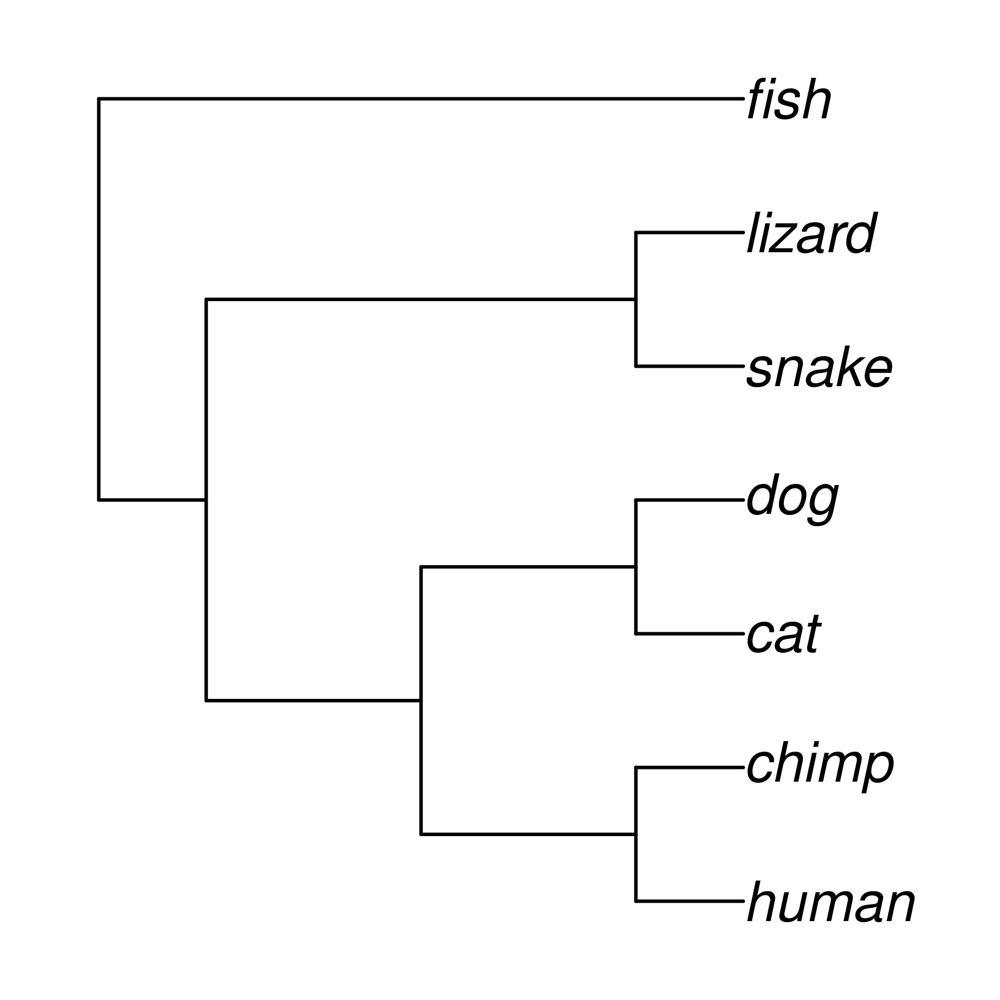
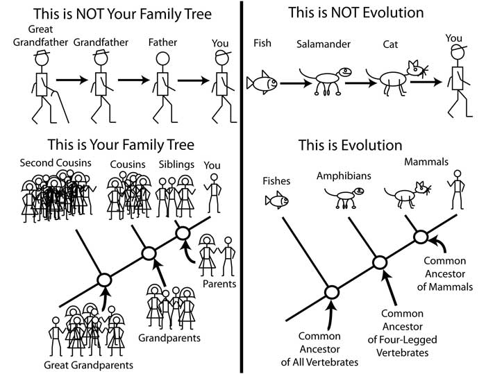
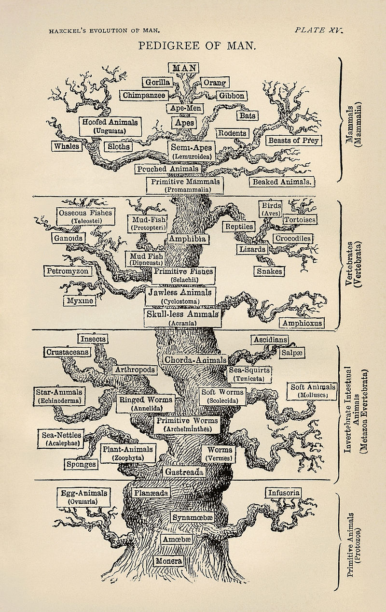
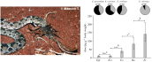
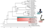

Phylogeny 1
BNS-2002: Genes, Development, and Evolution
Dr Axel Barlow
email: a.barlow@bangor.ac.uk
Lecture schedule
- Drift and variation (Evolution: Chapter 6)
- Conservation genetics (Evolution: Chapter 6)
- Phylogeny 1 (Evolution: Chapter 16)
- Phylogeny 2 (Evolution: Chapter 16)
Sabretooth cats

Sabretooth cats

What is a phylogeny?
A representation of the evolutionary process
- Models how evolution works
- An evolutionary tree
- The tips are species
- Nodes are their common ancestors
- All species descend from a single common ancestor

Key process: Vertical gene transfer

Key process: Vertical gene transfer

Key process: Vertical gene transfer

Not a progression


Credit: Dr. Matthew Bonnan
If humans evolved from monkeys, then why are there still monkeys?

History
Earliest tree. Augustin Augier, 1801

First branching tree of animals. Lamarck, 1809

First tree based on fossils. Hitchcock, 1840

First evolutionary tree (non-creationist). Darwin, 1837

Refined for “On the Origin of Species”, Darwin, 1859

Position of humans in the tree. Haeckel, 1879

Phylogenetics: the study of phylogenies
Phylogenetics
- An entire field of evolutionary biology!
- Combines knowledge from multiple areas:
- evolutionary biology
- genetics
- mathematics
- computer science
- Multiple specific journals
Data: Morphology
- suitable for fossil and living species
- generally based on shared derived characteristics
- ancestral states identified using outgroup
- optimal tree selected based on parsimony
- limited numbers of characters may be available
- generally no model of evolution
- Homoplasy is independent evolution of similar states
- convergent evolution
- parallel evolution
- reversal

Data: Morphology

Data: genetics
- DNA, RNA or amino acid sequences
- Many characters
- Simple model of substitution
- many analytical methods
- Molecular clock
- evolution can be complex
- Difficult to apply to fossils (ancient DNA)
- Homoplasy still exists
- saturation by repeated substitutions

Gene tree (single locus tree)
- Evolutionary history of a single locus
- (not always an actual gene)
- Any recombining genome has multiple loci, each with its own gene tree
- Easy to calculate using genetic data (often sequences)
- Historical reliance on mitochondrial DNA
- Gene trees may differ
- incomplete lineage sorting
- admixture
More in next lecture

Terminology

Clades
- A clade contains one ancestor and all its descendents
- It is a monophyletic group
- Modern taxonomy (generally) tries to align with clades
- Not case for all:
- lizards
- reptiles
- elapids
- toads
- birds of prey

Using phylogenies
Placing enigmatic taxa in the tree
- Understand relationships of problematic taxa
- Genetic methods especially useful
- Molecular dating
- Recent trend for extinct species

Understanding evolution of novel traits
Giant beaver (Castoroides)
- 2 m long, up to 125 kg, 15 cm incisors
- Extinct ~12 Ka, coinciding with arrival of Clovis people
- Several derived adapatations for wood cutting and aquatic life
- Information on evolution of "ecosystem engineers"?


Giant beaver mitogenome phylogeny

Giant beaver mitogenome phylogeny
Measuring trait evolution
Mediterranean Dwarf elephants
- Multiple Mediterranean islands
- 1.5 to 2.3 m at shoulder
- Direct ancestor is Palaeoloxodon antiquus
- Example of insular dwarfism
- Phylogeny could provide information on the dwarfing rate


Dwarfing rate

Dwarfing rate
Comparative phylogenetic method
- species share an evolutionary history
- a trait in many species may result from a single evolutionary shift
- traits may evolve in a distant ancestor
- need to locate evolutionary shifts on the phylogeny

Venom evolution in saw-scaled vipers

Species discovery and delimitation
- Divergent clades and lineages may be separate species
- Needs me backed up with additional evidence
- Morphology
- Behaviour
- Multiple loci??
- etc...
Example: Zimbabwe rinkhals

Zimbabwe rinkhals

Zimbabwe rinkhals
Next time:
More phylogeny...